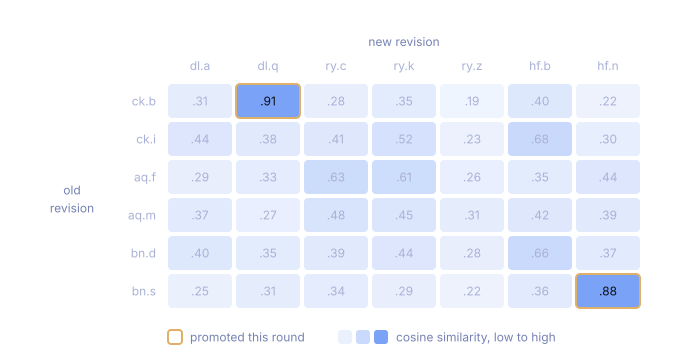
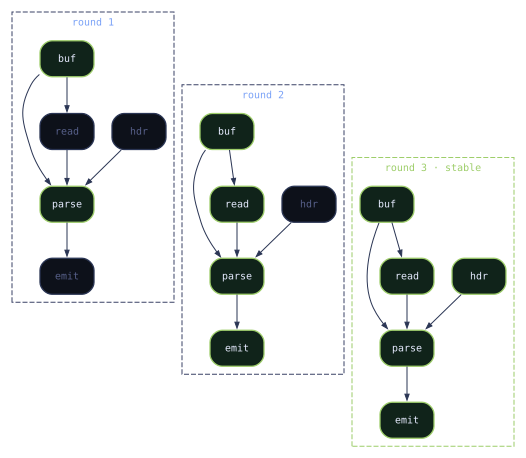
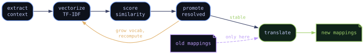

I was having a conversation the other day with a friend about an old Java game we've both done work on. And the topic of remapping came up. I was reminded of the approach I took for my remapper back then. My approach was a bit unorthodox, but worked extremely well. So I felt it was a good topic for another blog post.
Remapping?
Remapping in this context refers to a system that takes mappings of an obfuscated program (definitions of what is where), and remaps those definitions to a new version with fresh obfuscation applied to it. This can be challenging because names, locations, descriptors, and even structures can and usually do change here.
It's like getting a new seating chart after everyone changes seats, then figuring out who in the new chart corresponds to each person in the old one.
How's it normally solved?
Normally, for remapping, the process looks like this:
- Normalize Code - Reduce noise, eliminate dead code, untangle obfuscated control flow.
- Extract Features - Collect identifying information from each class, method, and field.
- Build Dependency Graphs - Classes, methods, and fields become nodes; calls, field access, inheritance, and ownership become edges.
- Score and Match - Rank possible matches, reject conflicts, and choose the most consistent mapping across the graph.
Algorithms and specifics may vary, but the graph model is the constant. Which means structure still acts as the primary anchor for identity, even when other features are considered.
Structure Is Not Identity
The main issue with this path is that structure is never guaranteed across re-obfuscation of new revisions. Especially once you consider static shuffling, code inlining/extraction, or actual code base changes and refactors. Once these get introduced into the mix, then issues present themselves and all of a sudden the well-trodden approach isn't so reliable.
But then, what should you chase to resolve where stuff lives across revisions in a program? This is what I asked myself, and the answer is Identity.
Identity is the answer to "what does this element (class/method/field) do? What does it represent? What functionality does it provide or feed?". If you could define an element's identity without coupling it to structural graphing, that would be far more valuable.
The Missing Signal
In order to answer this, I first had to think about what identity actually meant. Like, as a reverse engineer, I can look into a new binary and understand "Oh this field feeds this method which does x, y, or z", or "this method takes in these fields always and is called from this place.." and understand agnostically of the structure, what it is. So what is the actual logic behind that manual lens?
Well, it's a focus on context:
- What surrounds it?
- What feeds it?
- What does it feed?
This is the signal I was looking for. After some research and reading, I learned this is exactly what the field of distributional semantics aims to capture. It's the idea that:"You shall know a word by the company it keeps" - J.R. Firth
Swap "word" for "symbol" and that's the whole idea.
Quantifying Context
The next problem was turning that context into something measurable.
This is where TF-IDF came in. TF-IDF stands for Term Frequency–Inverse Document Frequency, and is normally used to measure how characteristic a word is to one document compared to an entire collection.
It's the classic backbone of search ranking, and the shape of the problem here is the same: each old element is a query, every element in the new revision is a document, and what you want back is a ranked list of which one it most resembles.
Applied here:
- The element becomes the document
- Its surrounding references become the terms
- Frequently seen local relationships gain weight
- Relationships common across the whole program lose weight
- Rare, distinctive relationships gain more weight
Both revisions are treated as a single corpus. IDF is computed across the union, so a term is weighted consistently in both revisions rather than producing two unrelated rankings. Nothing outside the two revisions is used; there's no external corpus or training set.
Once each element was represented by its weighted context, I could compare the old and new revisions by vector similarity and score how likely two elements were to share the same identity.

Thus, a new approach is born: the Identity Graph.
It's still a graph, but not a structural one - the nodes are elements from both revisions, and the edges are scored candidate correspondences between them, not calls or field accesses. The program's shape isn't encoded in it at all.
Identity Propagates
The important part here was that these scores weren't calculated once and treated as final. The graph was refined iteratively.
Initially, each element only had the context directly available around it. Most come out ambiguous at that stage. A few don't: where one candidate scores far enough above every alternative and no other element wants that same partner, the pair is promoted to a resolved identity.
Promotion is what makes the next round different. A resolved identity becomes a term in its own right, so an element that previously had "read by some method" as context can now have "read by the resolved packet-parsing method". The vocabulary grows, weights are recomputed over the expanded corpus, and elements that were indistinguishable on round one separate on round two. Those resolve, become context themselves, and the process repeats until a round promotes nothing new.

This process was completely agnostic of the existing mappings. It resolved both revisions into a shared identity model based only on the code and the context surrounding each element.
Only once that shared model stabilized were the old mappings introduced. At that point, generating the new mappings was mostly just translation:
old mapped symbol -> resolved identity -> corresponding element in the new revisionConclusion
In the end, this worked extremely well. It not only reliably survived re-obfuscation, but also large structural changes across revisions of the game.
The main advantage was that it wasn't trying to force one revision's structure onto another. It built a unified identity model across both revisions, then used the old mappings only at the very end to translate those identities into new symbols.

I also think the same approach could have value well outside of this use case. Native applications with stripped symbols, firmware revisions, malware families, or binaries compiled with different toolchains all have the same general problem: structures are unstable, but the role something plays within the wider program is often far more consistent.
There is probably a lot of room here for applying distributional ideas to reverse engineering more generally. Rather than identifying code purely by what it looks like, identify it by the shadow it casts across everything around it.